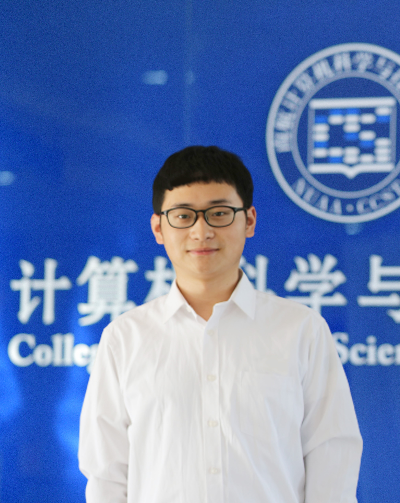

Junyong Zhao赵俊勇Postdoc Fellow
Department of Computer Science and Engineering, |
 |


I am currently a Postdoctoral Fellow in the Department of Computer Science and Engineering, the Chinese University of Hong Kong, advised by Prof. Dou Qi. Before joining CUHK, I received my Ph.D. degree from the School of Computer Science and Technology, Nanjing University of Aeronautics And Astronautics, advised by Prof. Daoqiang Zhang and Liang Sun. I was a visiting Ph.D. student at the Agency for Science, Technology and Research (A*STAR) in Singapore from December 2023 to December 2024, advised by Prof. Huazhu Fu
My research interests include Medical Image Analysis, Image Segmentation, Multi-modal Learning, 3D Gaussian Splatting, and Finite Element Analysis.
📢📢📢 I'm always open to collaboration opportunities and exchanging ideas. If you're working on related topics, feel free to reach out!.**⚡
🔔News
[Jun 2025] One paper accepted by MICCAI2025.
[Jan 2025] One paper accepted by TMI.
[Jan 2025] One paper accepted by ISBI 2025.
[Dec 2024] One paper accepted by TMI.
[Dec 2024] One paper accepted by PR.
[Nov 2024] Zhao serves ISBI2025 as a TCP Reviewer.
[Oct 2024] Zhao obtained IEEE TMI Distinguished Reviewer Silver Level 2023-2024
[Oct 2024] One paper accepted by IEEE/ACM TCBB
[Sep 2024] One paper accepted by TIP
[Jun 2024] Two papers accepted by MICCAI 2024
📝Selected Publications
Journal Papers
-
Uncertainty-Driven Edge Prompt Generation Network for Medical Image Segmentation[paper]
Junyong Zhao, Liang Sun, Dingwei Fan, Kun Wang, Haipeng Si, Huazhu Fu, and Daoqiang Zhang.
IEEE Transactions on Medical Imaging, 2025.
-
MA-SAM: A Multi-atlas Guided SAM Using Pseudo Mask Prompts without Manual Annotation for Spine Image Segmentation[paper] [GitHub]
Dingwei Fan^, Junyong Zhao^, Chunlin Li, Xinlong Wang, Ronghan Zhang, Qi Zhu, Mingliang Wang, Haipeng Si, Daoqiang Zhang, and Liang Sun.
IEEE Transactions on Medical Imaging, 2024. (^co-first author)
-
Edge-enhanced Semi-supervised Vertical Convolutional Neural Network for Tubular Structure Segmentation: Application to Medical Images[paper]
Junyong Zhao, Liang Sun, Zhi Sun, Yanling Fun, ShaoWei, Xin Zhou, Haipeng Si, Daoqiang Zhang.
Pattern Recognition, 2024.
-
Discriminative Domain Adaption Network for Simultaneously Removing Batch Effects and Annotating Cell Types in Single-Cell RNA-Seq [paper]
Qi Zhu, Aizhen Li, Zheng Zhang, Chuhang Zheng, Junyong Zhao, Jin-Xing Liu, Daoqiang Zhang, Wei Shao.
IEEE/ACM Transactions on Computational Biology and Bioinformatics, 2024.
-
MAS-CL: An End-to-end Multi-atlas Supervised Contrastive Learning Framework for Brain ROI Segmentation [paper]
Liang Sun, Yanling Fu, Junyong Zhao, Wei Shao, Qi Zhu, Daoqiang Zhang.
IEEE Transactions on Image Processing, 2024.
-
Global-local consistent semi-supervised segmentation of histopathological image with different perturbations [paper]
Xi Guan, Qi Zhu, Liang Sun, Junyong Zhao, Daoqiang Zhang, Peng Wan, Wei Shao.
Pattern Recognition, 2024.
-
MSEF-Net: Multi-Scale Edge Fusion Network for Lumbosacral Plexus Segmentation with MR Image [paper]
Junyong Zhao, Liang Sun, Zhi Sun, Xin Zhou, Haipeng Si, Daoqiang Zhang.
Artificial Intelligence in Medicine, 2024.
-
Characterizing the Survival-Associated Interactions between Tumor-infiltrating Lymphocytes and Tumors from Pathological Images and Multi-omics Data [paper]
Wei Shao, Yingli Zuo, YangYang Shi, Yawen Wu, Jiao Tang, Junyong Zhao, Liang Sun, Zixiao Lu, Jianpeng Sheng, Qi Zhu, Daoqiang Zhang
IEEE Transaction on Medical Imaging, 2023.
-
Low-dose CT denoising via sinogram inner-structure transformer [paper]
Liutao Yang, Zhongnian Li, Rongjun Ge, Junyong Zhao, Haipeng Si, Daoqiang Zhang.
IEEE Transaction on Medical Imaging, 2022.
-
Comparison of two internal fixation systems in lumbar spondylolysis by finite element methods [paper]
Le Li, Shuhao Jiang, Junyong Zhao, Mengmeng Zhao, Xin Zhou, Kunpeng Li, Chen Liu, Wencan Zhang, Junfei Chen, Qun Yu, Yuefeng Zhao, Jingjing Wang, Haipeng Si.
Computer Methods and Programs in Biomedicine, 2022.
-
Residual-atrous attention network for lumbosacral plexus segmentation with MR image [paper]
Junyong Zhao, Liang Sun, Xin Zhou, Shuo Huang, Haipeng Si, Daoqiang Zhang.
Computerized Medical Imaging and Graphics, 2022.
-
Modelling tri-cortical pedicle screw fixation in thoracic vertebrae under osteoporotic condition: A finite element analysis based on computed tomography [paper]
Wencan Zhang^, Junyong Zhao^, Le Li, Chenxiao Yu, Yuefeng Zhao, Haipeng Si.
Computer Methods and Programs in Biomedicine, 2020. (^co-first author)
-
Thoracic vertebra fixation with a novel screw-plate system based on computed tomography imaging and finite element method [paper]
Wencan Zhang^,Junyong Zhao^, Xiujuan Jiang, Le Li, Chenxiao Yu, Yuefeng Zhao, Haipeng Si.
Computer Methods and Programs in Biomedicine, 2020. (^co-first author)
Conference Papers
-
Multi-expert Collaboration and Knowledge Enhancement Network for Multimodal Emotion Recognition[paper]
Kun Wang, Junyong Zhao, Liying Zhang, Qi Zhu, Daoqiang Zhang.
International Conference on Medical Image Computing and Computer Assisted Interventions (MICCAI 2025), KOREA.
-
F^2UE-Net: an Uncertainty-Driven Dynamic Expert Network for Long-Tail Retinal Disease Classification[paper]
Junyong Zhao^, Tian Lin^, Meng Wang, Liang Sun, Haoyu Chen, Daoqiang Zhang, Huazhu Fu.
IEEE International Symposium on Biomedical Imaging (ISBI 2025), HOUSTON
-
Open-Set Semi-Supervised Classification with Learnable Prototypes and Outlier Filter [paper]
Along He, Tao Li, Yitian Zhao, Junyong Zhao, Huazhu Fu.
International Conference on Medical Image Computing and Computer Assisted Interventions (MICCAI 2024), MOROCCO.
-
Correlation-adaptive Multi-view CEUS Fusion for Liver Cancer Diagnosis [paper]
Peng Wan, Shukang Zhang, Wei Shao, Junyong Zhao, Yinkai Yang, Wentao Kong, Haiyan Xue, and Daoqiang Zhang.
International Conference on Medical Image Computing and Computer Assisted Interventions (MICCAI 2024), MOROCCO.
⭐Professional Activities
-
Conference Service
TPC reviewer, IEEE International Symposium on Biomedical Imaging, ISBI 2025.
-
Journal Reviews
IEEE Transactions on Medical Imaging.
Medical Image Analysis.
IEEE Transactions on Neural Networks and Learning Systems.
Computer Methods and Programs in Biomedicine.
Journal of Imaging Informatics in Medicine.
Academic Radiology.
-
Technical Reviewers
MICCAI, 2023.
ACM Multimedia, 2024.
ISBI, 2025.